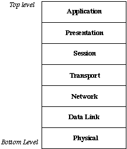

Basic overview of networks, and the support in the GNU/Linux environment to the various aspects of networks
The lecture will not be a "cookbook" like "In order to connect your computer to a specific ISP, you type this and that" - this is what the various HOWTOs on the net are for. I will give links to the relevant HOWTOs during the lecture.
The lecture aims for correctness, but I sometimes divert from the exact standard definition, in order to get the most interesting things for the home user.
The lecture doesn't assume any knowledge in computer networks, and my apologies to those who has such knowledge.
2. The OSI 7 Layers Model
The OSI is a model defined by ISO, which splits the network to 7 layers.
Each of the layers should need to communicate only with the layer above it and the layer below it, through well defined interfaces
That way it should be possible to replace each layer implementation with a different implementation, with no need to modify any additional network component
The OSI model defines only the role each layer should perform in the network.
Here is a diagram of the OSI model:

3. Layer I - the Physical Layer
This layer handles all of the physical components of the network.
This layer includes the network cables, connectors and the interface between the physical network and the software.
Ethernet - this is an IEEE standard (number 802.3), which defines Layer I and Layer II implementation for local area networks
In home networks, Ethernet is most commonly found as a short patch between the Cable/ADSL modem and the computer, or as the internal network.
There are a number of variants of the Ethernet standard, with baud-rates varying between 10Mega bit per second (Mbps) and 1000Mbps.
The most common variant nowadays is 100Mbps (also called Fast-Ethernet)
3.2. Dial-Up Modem Connection
The name speaks for itself.
Maximum baud rate possible with dial-up connection is 56000 bits per second
The Linux aspect: Except for very expensive hardware modems, there is a problem, as big part of the modem's algorithms is implemented in the driver, and the manufactures tend to release only drivers for windows, or, in the good case, binary only drivers for Linux, which work only with specific versions of the Linux kernel.
The following sites contain useful resources for using modems under Linux:
External Cable TV/ADSL modems usually connect to the computer through Ethernet, though they usually require tunneling.
ADSL/CableTV link through USB
Sometimes, the modem is connected to the computer using USB.
In Israel, the Cable TV USB modem is supported by Linux out of the box, using the usbnet module.
The ADSL modems are more problematic, and there are only pre-alpha drivers for them, so be sure to ask your dealer or an Ethernet Modem (and not a USB one).
(The USB ADSL modems are known to be problematic under Windows as well, and should be avoided.)
3.4. Wireless (WiFi)
WiFi (IEEE standard 802.11) is a wide-spreding standard for wireless LAN.
The MAC (Media Access Control) layer, which makes sure that only one device will try to send data over a shared medium, ignores messages which are not intended to the computer, and drops damaged packets.
the LLC (Logical Link Control) layer, which makes sure that both sides of every connection are synchronized, and does some error correction.
The MAC layer is usually implemented in hardware and so poses no problem to Linux.
VPN is Virtual Private Network. It means having a number of computer which are virtually on one network, while on the reality they are on different networks in the internet.
Many ADSL and Cable providers require their users to connect to them using a VPN.
In order to create a VPN, it is common to tunnel a whole network protocol stack, down to and including the data link layer, as an application layer (layer 7) connection.
Few common implementations of such VPN is PPTP (Point-to-Point Tunneling Protocol), L2TP (Layer 2 Tunneling Protocol) and PPPoE (PPP over Ethernet).
Out of these, the Linux "back-end" support for PPTP and PPPoE is good, while L2TP is still under development.
4.2.1. ADSL and Cable under Linux
For ADSL in Israel, PPTP or PPPoE is used for the connection.
Both are supported under Linux.
PPPoE is supported natively by most modern distributions, and usually the distribution has a wizard which will help setting up the link.
The relevant package is called rp-pppoe and includes a script "adsl-setup" to configure your connection and "adsl-start" to initiate a connection after setup.
The PPTP protocol support is a bit more problematic to set up, but yet possible, and works well.
A HOWTO about connecting to ADSL in Israel using PPTP (written by Dr. Daniel Arbel and Muli Ben-Yehuda) can be found here: http://www.mulix.org/adsl.html
The cable TV Internet access providers sometime provide a direct Ethernet connection, using DHCP to assign IP address and to inform the computer about the network details it need to know, without any need for a tunnel.
4.2.2. DHCP
DHCP stands for Dynamic Host Configuration Protocol.
It is a layer III protocol used to assign IP addresses to computers which connect to the net.
Additionally, DHCP is used to inform the computer about other details of the network, such as the DNS and gateway IPs.
More details about DHCP in Linux are available in the DHCP HOWTO.
DHCP-configured connections will usually "just work" if you will select "automatically configure" in your distro network setup.
4.2.3. Back to Cable TV Connections...
Sometimes, when on windows there is need for a "dialer", the connection requires PPTP or L2TP (most ISPs allow both)
Other protocols exist in this layer, and most of them are supported by the Linux kernel, but they are only rarely used.
5.2. The IPv4 Protocol
The IPv4 protocol assigns each device which is connected to the network a 32 bits number (IP address), which should identify it uniquely.
The problem is that large ranges in the IP "address-space" are reserved for different usages, or assigned to organizations which don't use even a small part of the range .
Therefore, a new standard for the Network Layer, called IPv6, which has a much larger address space, has been created, and is fully supported by Linux, but it is not commonly used yet.
5.3. Masquerading
Due to this address-space problem, ISPs provide home users with a single IP address per connection.
When we want to connect several computers using a normal connection, we give the computers in the internal network a "virtual" IP, which is in one of the ranges reserved for internal networks, and make one of the computers redirect the packets from the external interface to the correct owner in the internal network.
This process is called Masquerading. During this process, the destination and source addresses of the packets are translated, this is called NAT (Network Address Translation), and can be used for variety of other network magic.
This layer is responsible for multiplexing a number of connections over a single link, splits the data into small packets, make sure that the data is received in the order in which it was sent, and perform error correction and retransmit the data in case of error.
Two common protocols used in this layer are TCP (which provides all of these services, but incurs a small bandwidth and CPU overhead), and UDP, which only supplies multiplexing services, but has much smaller overhead.
6.1. Firewalls
The transport layer is the main layer for firewalls to operate in.
The main function of firewalls is to filter the packets transferred on the network, so that only the packets we wish to accept will come through.
There are two types of firewalls: stateful and stateless.
The Linux Kernel has a built-in stateful firewall module, called "iptables" or "netfilter".
It is supposed to provide synchronization services and to keep track of users through different transport connections.
RPC and Named network pipes can be considered to be part of this layer.
8. Layer VI - the Presentation Layer
This layer is mostly theoretical.
This layer should handle the format of the data transferred.
It is supposed to translate data from host format to a standard network format, in order to allow seam-less connection between different hosts.
This layer is the one in which encryption should take place.
In practical networks nowadays, the roles of this layer are mostly performed in the application layer.
9. Layer VII - the Application Layer
This layer is the layer in which the various user applications (i.e. web browsing - HTTP; e-mail - SMTP, POP3 and IMAP; File transfers - FTP, TFTP, SMB, KaZaA and SCP) are implemented.
One important application layer service which should be noted is the DNS service, which operates on UDP port 53, and used to translate domain names like www.haifux.org to IP numbers like 132.69.253.254 .
Sometime during the configuration of a connection, one will have to specify the IP of the DNS server of the ISP.
10. Bibliography
The following websites were used during the preparation of this lecture: